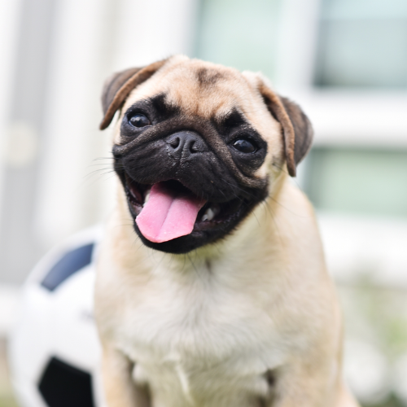

O Pug precisa de acompanhamento médico veterinário com mais frequência do que outras raças e necessita de uma escovação frequente de sua pelagem, algo não tão comum para cães com pelinhos como os deles. Exercícios físicos devem ser moderados, pequenas caminhadas em horários mais fresquinhos do dia são bastante indicadas. No entanto, são importantes para a saúde do animal, tanto pela questão do peso, quanto por motivos de socialização e estímulos - já que costumam ficar a maior parte do tempo dentro de casa.

Robert
Robert
Pug é uma das raças mais antigas que existe. Foram encontrados indícios de cachorros muito parecidos com o Pug datados de 1700 antes de Cristo! No entanto, não se tem certeza absoluta de sua origem. Existem teorias de que o Pug surgiu do cruzamento de diversas outras raças como o Pequinês ou ainda o Mastife Francês. O que se tem certeza é de que os Pugs surgiram em algum local da China e eram cachorros pertencentes à realeza. Esses cãezinhos foram levados para a Holanda e a partir de lá atingiram outros países da Europa onde receberam diferentes nomes.